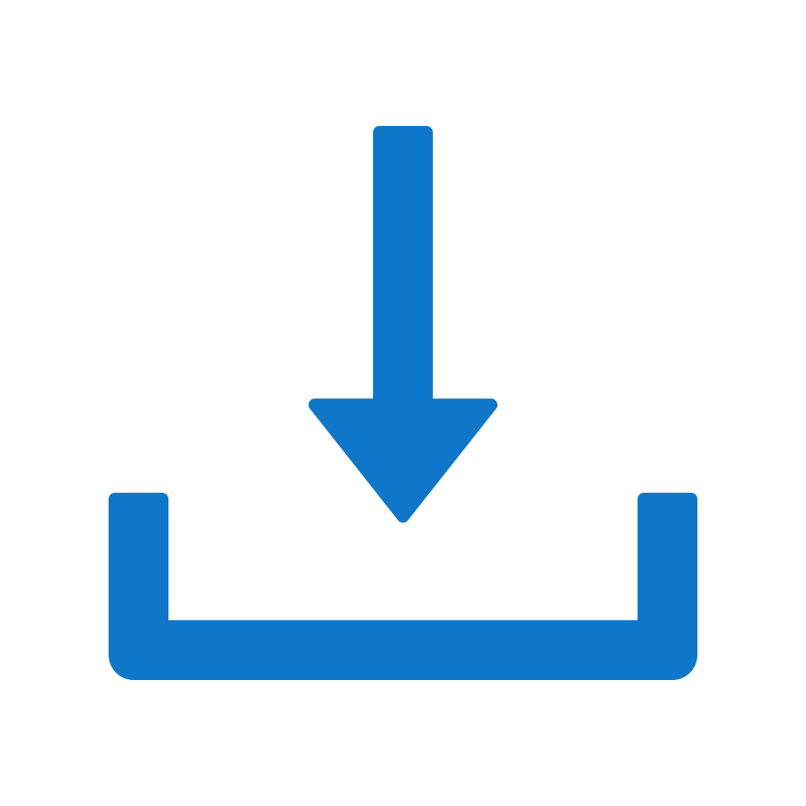

Seu download começou!
Apenas aguarde alguns segundos enquanto preparamos seu arquivo...
✓ Verificando sistema...
Se o download não iniciar automaticamente,
clique aqui para baixar manualmente
.
← Voltar para o site principal